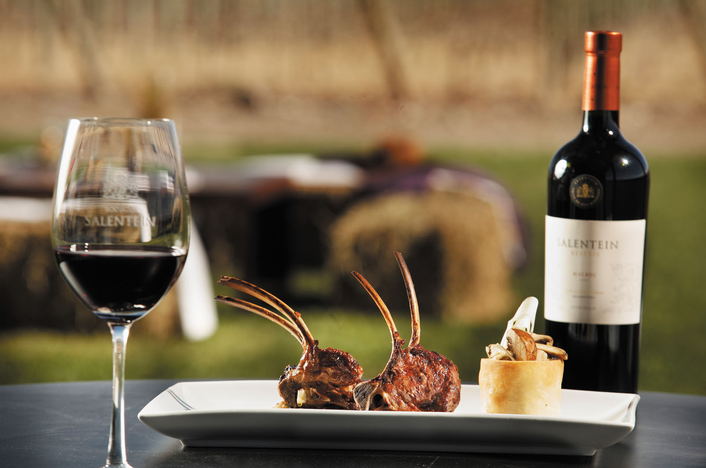
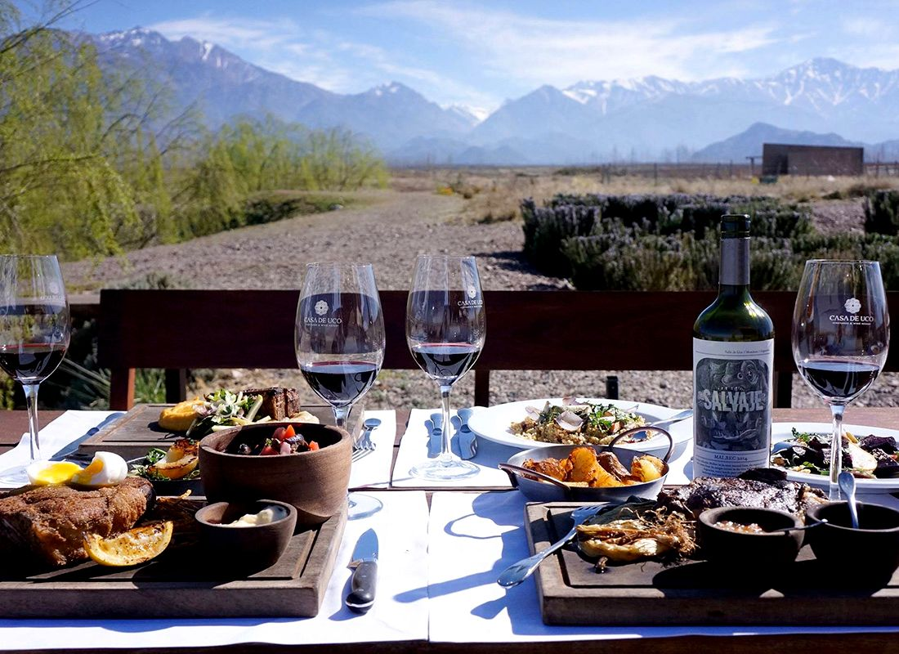
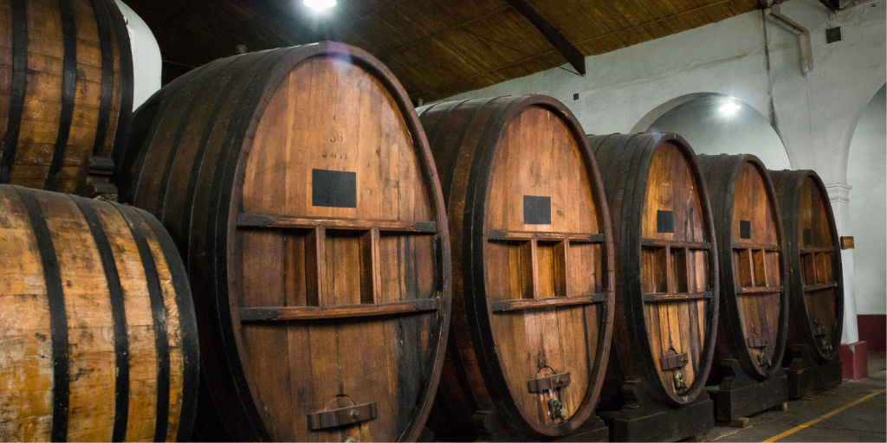
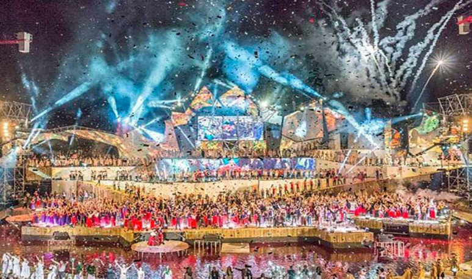

| Gastronomía | |
|---|---|
| Restaurantes |  |
| Sidrerías y asadores | |
| Bodegas de vino y txakoli | |
| Productos típicos |  |
| Escuelas de hostelería | |
| Cultura | |
| Archivos y bibliotecas |  |
| Museos | |
| Palacios de congresos | |
| Ferias de muestras | |
| Ocio | |
| Entretenimiento y diversión |  |
| Ocio cultural | |
| Excursiones y deporte |